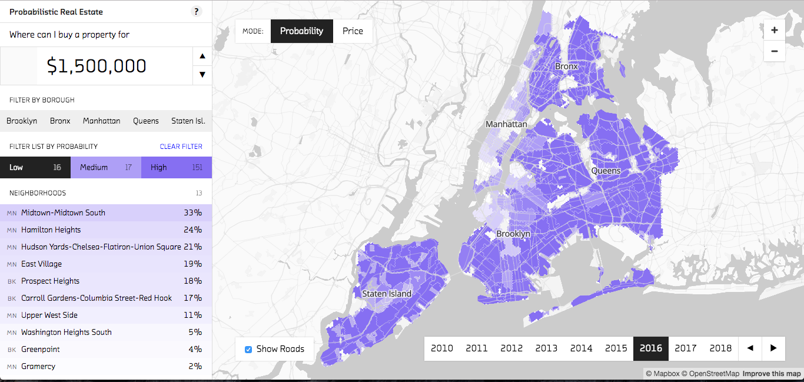
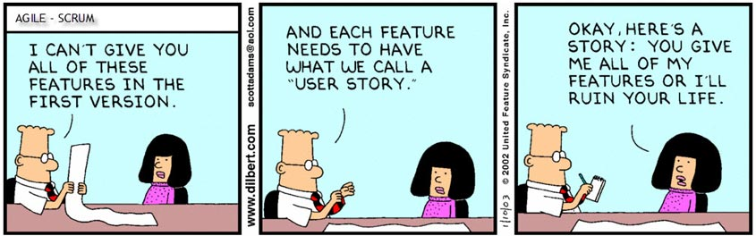
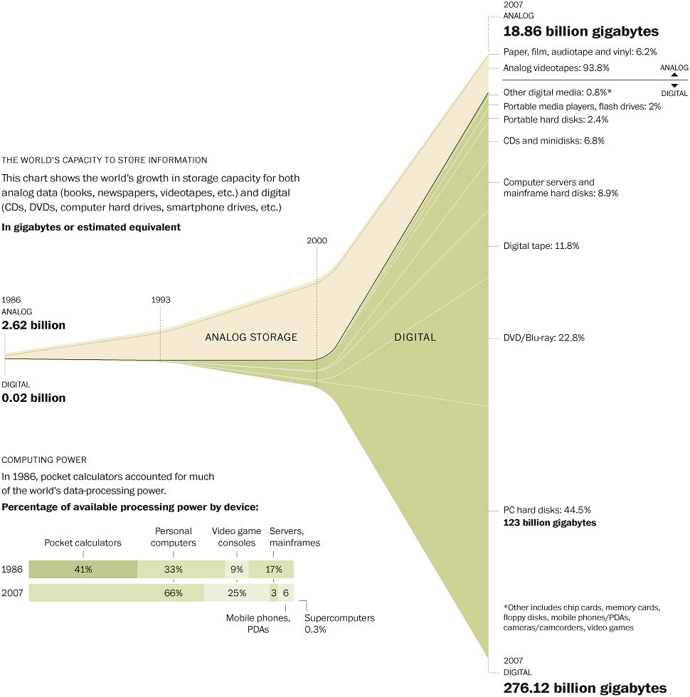

class: center, middle, full-bleed ## The Humble Data Scientist ###—The Art & Essence of Data Science • • • • • • #### Dr. Friederike Schüür • [@FSchueuer](http://twitter.com/FSchueuer) • <Friederike@fastforwardlabs.com> #### Fast Forward Labs • [@fastforwardlabs](https://twitter.com/fastforwardlabs) • [fastforwardlabs.com](http://www.fastforwardlabs.com) #### Slides • [fastforwardlabs.com/talks/nyc-r](http://fastforwardlabs.com/talks/nyc-r) ??? Welcome! Fast Forward Labs is an applied machine learning research and advising company out of Brooklyn, NY. We do technical deep dives into emerging technologies, and work with large enterprise to small startups clients on how to best leverage the power of data science and machine learning within their organizations. Check us out! Hit: Use the arrow keys to move forward and backward. Hit `p` on your keyboard to toggle the presenter notes on/off. --- class: full-bleed, center, middle  ??? When Jared asked me to come speak at this conference, my first time, I thought ... great! At FFL, we had just finished a report on probabilistic programming, a set of tools that make Bayesian inference more accessible including Stan, the closest I have ever some to using R ... I do have to confess I am more of a python lady ... --- class: full-bleed, center, middle  ??? We build a prototype using Stan, a Bayesian model to predict real estate prices in New York City. Let me tell you, the speed of gentrification is not pretty. But then I decided to talk about something else entirely, and I do hope there is a worst title award ... because I own this! --- class: middle ### The Humble Programmer - Turing Award Acceptance Lecture by Edsger W. Dijkstra (1972) ### Computer Programming as an Art - Turing Award Acceptance Lecture by Donald Knuth (1974) ### No Silver Bullet—Essence & Accident in Software Eng - in Proceedings of the IFIP Tenth World Computing Conference by Fred P. Brooks Jr. (1986) ??? My talk was inspired by three classic papers in computer science, "The Humber Programmer" by Edsger Dijkstra, "Computer Programming as an Art" by Donald Knuth, and "No Silver Bullet" by Fred Brooks. Dijkstra's and Knuth's papers are transcripts their respective Turing Award acceptance speeches, the "Nobel prize of computing". Fred Brooks won the Turing award in 1999. These seminal papers are meditations on programming, software engineering, the theory and practice of writing code to solve problems. And they are as relevant to data science today as they were to computer programming in the 60s, 70s, and 80s. Why? I frequently find myself in conversation with aspiring data scientists who like to worry ... --- class: center, middle *"Is data science a good career choice?* *The community is constantly adding better tools and data science platforms. Soon, everyone will be able to do data science and the profession 'data scientist' will cease to exist."* — Worrier ??? Hm? Maybe, sure, but what is interesting that in the 60s and early 70s, people felt the same about programming. --- class: center, middle *“[...] and in those days one often encountered the naive expectation that, once more powerful machine were available, programming would no longer be a problem.”* —Edsger W. Dijkstra, The Humble Programmer (1972) ??? Programming is a solved problem, right? Well, not quite. What happened instead was ... --- class: full-bleed, center, middle <img width="100%" src="img/snap.jpg"> ??? ... the crisis of software engineering, a term first coined at a NATO conference on software engineering in 1968. --- class: full-bleed, center, middle <img height="100%" src="img/automation.png"> ??? In the 60s, the number of software projects that took longer than planned and went way over budget, that never delivered a solution or delivered a solution that no one had asked for had started to increase quite significantly — in stark contrast to the belief that programming was about to become "easy". Why? --- class: center, middle *“To put it quite bluntly: as long as there were no machines, programming was no problem at all; when we had a few weak computers, programming became a mild problem, and now we have gigantic computers, programming has become an equally gigantic problem.”* —Edsger W. Dijkstra, The Humble Programmer (1972) ??? Hardware had started to improve at a dramatic rate, also known as Moore's Law. --- class: full-bleed, center, middle <img width="80%" src="img/moores-law2.png"> ??? Increasingly powerful hardware enabled more powerful, more complex software projects. Alas, progress in software engineering was not happening at quite the same pace. Why? It's hard, yes. But also because people had misidentified what was hard about software engineering. Let me illustrate ... We all think we know what a bicycle looks like. --- class: center, middle ??? Yet, when we attempt to draw one we ... --- class: center, middle ??? ... and then render it to look like a real bike, things are starting to look a little weird. As creatures, we encounter friction when we start implementing our ideas, when we start making them real, when we start writing a program or when we start to analyze data. So, we blame the tools we happen to use, not our ideas. They seemed so great, it is the world that is not cooperating. We blame the wood that is starting to splinter as be build a table, the programming language that's akward and the data while really, what is hard about data science is not knowing how to use conv nets for image classification or recurrent nets to write movie scripts ... --- class: center, middle ??? Although, do watch Sunspring, if you haven't already - it's pretty cool ... What is hard is finding good problems to solve using data science and machine learning. With all the hype around neural networks, insert other shiny object of your choice ... --- class: center, middle *“We must not forget that it is not our business to make programs, it is our business to design classes of computations that will display a desired behavior.”* —Edsger W. Dijkstra, The Humble Programmer (1972) ??? Or to find good, effective solutions only as complex as the problem requires, no more and no less. Working with FFL clients, I see technical teams decide upon what tools they want to use before they've spend sufficient time with their problem to understand what tools might be appropriate. --- class: center, middle ??? So, they may find out they have chosen a hammer to cut a string. Well, good luck! Or a chainsaw, which will get the job done but really, it is a bit much, isn't it? What is hard about data science is knowing how to take open-ended problems and turning them into a set of problem statements one can answer using tools from the data science and machine learning toolbox. That requires empathy, as JD mentioned yesterday! --- class: middle ### Always, always know what *success* means to *you* and *your* problem! --- class: middle “Our discretionary traders consume vast amounts of information: sell-side research, earnings calls transcripts, transcripts & material from trade conferences, and the daily news. They cannot read everything; they don’t want to miss anything; they suffer from major FOMO. They are trained to question every piece of information put in front of them. Using data science and machine learning, how can we build a system that surfaces relevant news items to our traders?” --- class: center, middle  ??? User stories are part of agile methodologies to encourage empathy during software development. Interestingly, the software engineering crisis is often credited to have created or at least contributed to the development of agile workflows. As hardware became more powerful, as projects became more complex, as more people had to work together to build good products, teams needed to workflows and processes ... I dare say we can say the same about data science these days. The key enabler of data science, data, has grown significantly. --- class: center, middle  ??? Sadly, agile workflows are not quite the right fit for data science teams. Why? --- class: center, middle ??? Software engineers are like architect who are beholden to the laws of physics, gravity and such. Within those laws, there are no limits to what they can build except their imagination. Software engineers are true creators, they build, they grow software and the products and capabilities it enables. --- class: center, middle ??? Data scientists on the other hand are scientists. As scientists, it is their job to learn about the world, to systematize knowledge, to uncover laws - knowlegde and laws that ultimately power decisions or new data products. Businesses often ask, can I build this data product? The problem is, before you start working with the data, before you examine reality, you do not know what it looks like. You don't know what it enables. Unlike software engineers, data scientists have to manage uncertainy as part of their workflow. To work well within industry environments, we need to use processes that manage uncertainty, that derisk our work; we cannot repeatedly justity working on projects for months only to discover they won't work. --- class: middle ### Identify assumptions about the world that need to be true for your solution to work. ### Rank assumptions according to criticality. ### Design *simplest* experiment possible to test the most critical assumption. ??? That's why you defined success metric clearly before. Reference back to Gelman --- class: middle ### Reluctance to engage with the business ≠ nerd! ### Use of a shiny tool ≠ hard problem! ### Use of a shiny tool ≠ smart data scientist! --- class: middle, center ## Thank you! Slides • [fastforwardlabs.com/talks/nyc-r](http://fastforwardlabs.com/talks/nyc-r) Data Science Summer Internship Position • Friederike@fastforwardlabs.com